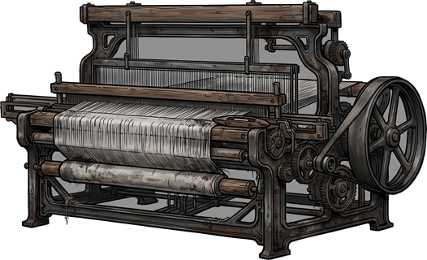
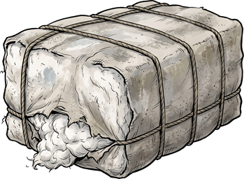
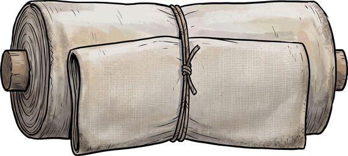

Willkommen zurück
Weiterspielen
Neu beginnen
Wähle deine Figur
Dein Name oder Kürzel
(Pflichtfeld, für die Auswertung)
Bitte trag zuerst deinen Namen ein.
Männlich
Weiblich
Bewegen: WASD / Pfeiltasten ·
E
: Sprechen ·
C
: Codex
F2: Zonen-Editor
Codex
Sprechen
Deine Schicht am Webstuhl

Weben
Tippe oder drücke die Leertaste, so schnell du kannst

Rohe Baumwolle
→

Fertiger Stoff
Was deine Schicht wert war
Material (Baumwolle)
Dein Lohn
Bleibt beim Besitzer
Weiter
Antwort prüfen
Deine Position
Hier gibt es kein Richtig und kein Falsch. Diese Antwort wird nicht bewertet.
Deine Antwort landet in deinem Theorie-Codex und dient im Unterricht als Diskussionsgrundlage.
Antwort speichern
Theorie-Codex
Deine gesammelten Begriffe. Mit
C
oder
Escape
schließen.
Zurück ins Areal
Text mit Strg+C kopieren und in zonen.js einfügen. Escape zum Schließen.